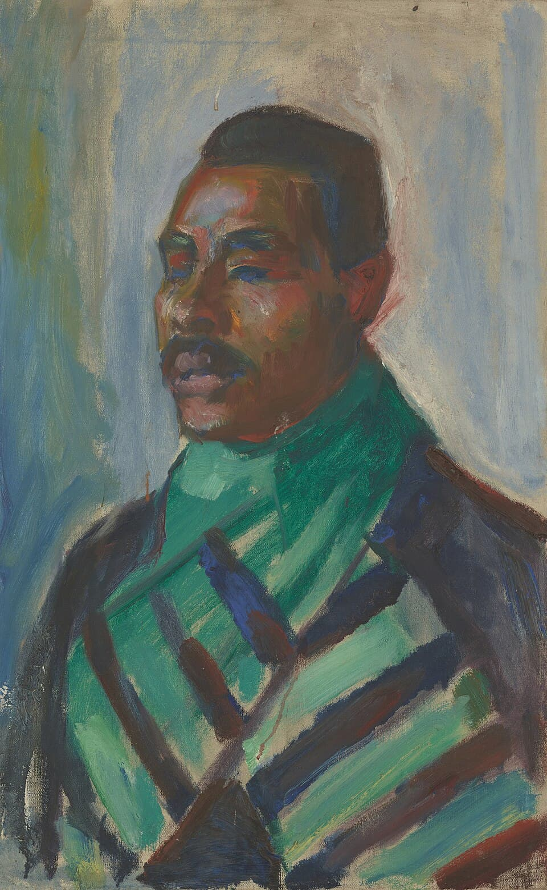

Aften på Karl Johan
Den store menneskemengden virker fremmed og urolig. Munch viser hvordan man kan føle seg alene, selv når man er omgitt av folk.

Menneskeberget
Menneskene samler seg til en stor gruppe, som kan symbolisere fellesskap og menneskelig livskraft. Bildet gir en følelse av at de beveger seg sammen mot noe større.

Sjalusi
De sterke fargene og personene viser hvordan sjalusi kan gjøre en urolig. Munch gjør en vanskelig følelse synlig i bildet.

Skrik
Figuren uttrykker angst og uro, som om verden rundt også roper. Bildet viser hvor overveldende sterke følelser kan være.

Sultan Abdul Karem
Portrettet retter oppmerksomheten mot en person og uttrykket hans. Ansiktet og kroppsholdningen gir bildet en sterk følelse av nærvær.